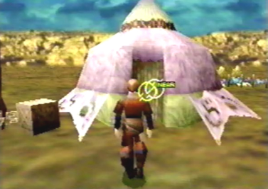

The Cursors Main Functions when Controlling Edge Pressing the A button, will make a circular cursor appear on the screen, along with Edge. It's similar to the cursor found in Panzer Dragoon and Panzer Dragoon 2 Zwei. The cursors main function in those games, was to lock-on to multiple enemies or different points along their bodies. Its main purpose in Panzer Dragoon Saga is very similar. In the game, you will find many item containers, as well as a variety of different objects you can examine. In order to open the item containers, you must move the cursor over the container with the D-pad or analog stick until it becomes highlighted, and press the A button to open the container, allowing you to acquire the item inside. This action is also used to examine the many different objects found throughout the game. There will also be certain instances when you get to go to small villages or towns. In order to talk to the people in those places, you must highlight them with the cursor and push A to talk to them. The cursor has one last function when controlling Edge. It's also used to enter the many houses you will find throughout these villages or towns. |
Press the A button to make the cursor appear. The cursor in PDS resembles the ones from the previous games. |
If you move the cursor over an item container with the D-pad or analog stick, it will become highlighted. |
Once the cursor is over the item container and the item container is highlighted, press the A button to aquire the item. |
You can also use the cursor to exame the many objects you will find throughout the game. |
Examining objects with the cursor does many things. It can make certain things happen, give you items and most importantly, will give you information about that item. In this pic, Edge has found an unusual crest resembling a dragon. |
While standing near a person, you can highlight them with the cursor. |
When the person is highlighted, push the A button and that person will talk to you. |
 When standing near a door, you can highlight it with the cursor. |
Once the door is highlighted, pressing the A button will bring up a menu allowing you to choose if you want to enter, or stay out. |
Choosing the option to enter, will bring you inside that house. |